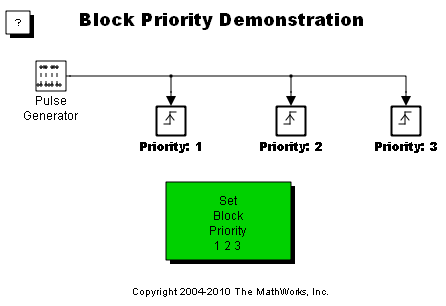

Block Priority
This demonstration shows what happens when blocks are assigned different priorities. The block priority affects the order in which the blocks are executed. You can set the block priority through the Block Properties dialog.
The block sorting order is calculated only at the beginning of a simulation. For this reason, changes to a block's Priority property are only updated when the simulation is started. Double click on the green block to change the priority levels for the blocks and see what happens.
Inside of each triggered subsystem is an S-Function which controls the coloring of the blocks and also slows down the simulation. The priority level of the block is displayed using the format attribute string that can be set in the Block Properties dialog.
